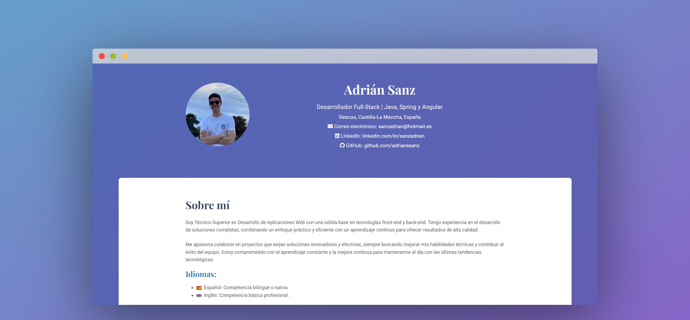
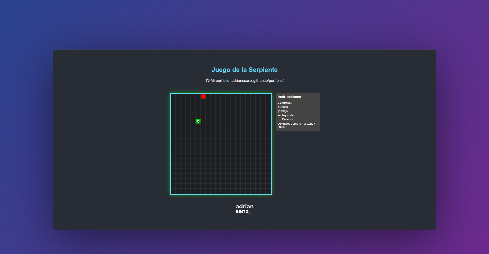

Adrián Sanz
Desarrollador Full-Stack | Java, Spring y Angular
Illescas, Castilla-La Mancha, España
Correo electrónico: sanzadrian@hotmail.es
LinkedIn: linkedin.com/in/sanzadrian
GitHub: github.com/adrianssanz
Desarrollador Full-Stack | Java, Spring y Angular
Illescas, Castilla-La Mancha, España
Correo electrónico: sanzadrian@hotmail.es
LinkedIn: linkedin.com/in/sanzadrian
GitHub: github.com/adrianssanz
Soy Técnico Superior en Desarrollo de Aplicaciones Web con una sólida base en tecnologías front-end y back-end. Tengo experiencia en el desarrollo de soluciones completas, combinando un enfoque práctico y eficiente con un aprendizaje continuo para ofrecer resultados de alta calidad.
Me apasiona colaborar en proyectos que exijan soluciones innovadoras y efectivas, siempre buscando mejorar mis habilidades técnicas y contribuir al éxito del equipo. Estoy comprometido con el aprendizaje constante y la mejora continua para mantenerme al día con las últimas tendencias tecnológicas.
 Español: Competencia bilingüe o nativa.
Español: Competencia bilingüe o nativa.
 Inglés: Competencia básica profesional.
Inglés: Competencia básica profesional.
Para mi proyecto final del Grado Superior en Desarrollo de Aplicaciones Web, creé una aplicación de gestión de tickets de parking que optimiza el control de plazas de estacionamiento. La aplicación hace uso de Java y Spring para el back, Angular y Bootstrap para el front, y para la base de datos utiliza MySQL
Esta aplicación web, desarrollada con React.js en el marco de un proyecto práctico para el módulo de Desarrollo Web en Entorno Cliente, fue realizada en colaboración con un compañero. Su propósito es ofrecer una experiencia interactiva y visualmente atractiva para los aficionados de la Fórmula 1, proporcionando un recorrido detallado por las estadísticas clave de la legendaria carrera de Fernando Alonso.
He desarrollado este portfolio personal para presentar mis habilidades y proyectos como desarrollador web. El sitio web ha sido construido utilizando únicamente HTML y CSS puros, enfocándome en un diseño limpio y responsivo que se adapta a diferentes dispositivos. El objetivo principal es mostrar mis competencias técnicas y experiencia en el desarrollo de software de manera organizada y accesible. El portfolio ha sido desplegado en GitHub Pages.

Como proyecto de repaso y aprendizaje personal he desarrollado un juego clásico de la serpiente utilizando HTML, CSS y JavaScript, el cual he desplegado en GitHub Pages. La jugabilidad se centra en controlar una serpiente que crece al comer una manzana.
Repositorio de GitHub
Aplicación Web

Desarrollador Fullstack (abril de 2024 - junio de 2024, 3 meses)
Desarrollo y optimización de una aplicación web full-stack, gestionando tanto el front-end con Angular.js como el back-end con Spring. Implementación de soluciones eficientes que mejoran la experiencia del usuario y el rendimiento del sistema.

Técnico de soporte (abril de 2022 - junio de 2022, 3 meses)
Responsable de soporte técnico, administración de aplicaciones de gestión y mantenimiento de equipos para asegurar un rendimiento óptimo.

CFGS Desarrollo de Aplicaciones Web (septiembre de 2022 - junio de 2024)
CFGS Administración de Sistemas Informáticos en Red (septiembre de 2020 - junio de 2022)